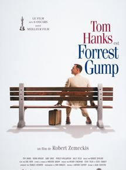
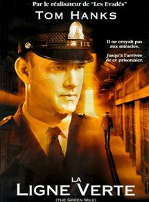
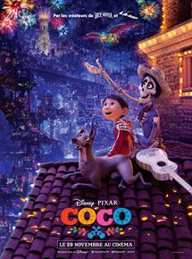

Pharmacien hospitalier de formation, je cherche a pouvoir exprimer mes connaissances acquises lors de mes différentes expériences, dans le but d'automatiser les taches a faible valeur ajouté et permettre aux pharmaciens de ce concentrer sur le coeur de leur métier, à savoir la prise en charge médicamenteuse individualisée au plus près du patient.
See for yourself|  |
Forrest GumpQuelques décennies d'histoire américaine, des années 1940 à la fin du XXème siècle, à travers le regard et l'étrange odyssée d'un homme simple et pur, Forrest Gump. |
|  |
La Ligne vertePaul Edgecomb, Gardien-chef du pénitencier de Cold Mountain en 1935, était chargé de veiller au bon déroulement des exécutions capitales. Parmi les prisonniers se trouvait un colosse du nom de John Coffey... |
|  |
CocoDepuis déjà plusieurs générations, la musique est bannie dans la famille de Miguel. Un vrai déchirement pour le jeune garçon dont le rêve ultime est de devenir un musicien aussi accompli que son idole, Ernesto de la Cruz. |
This page has been coded during the FullStack program @LeWagon. That was probably the best experience of my entire life.